{kind=link}
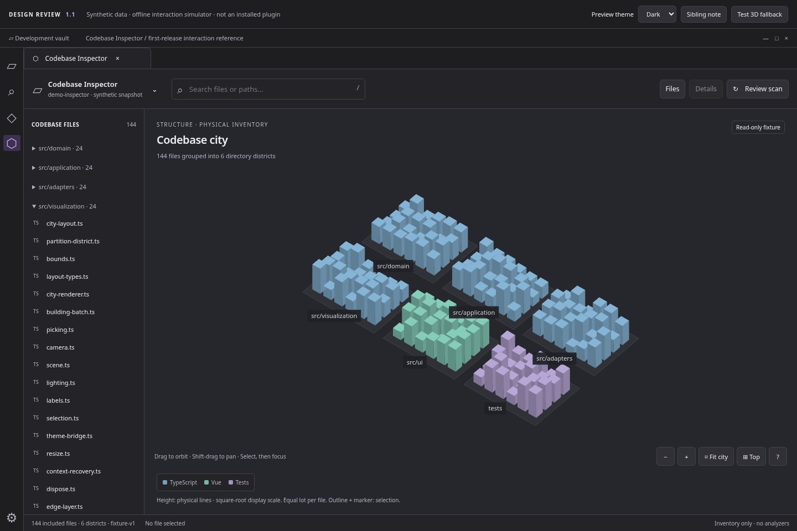
01 · Structural city
Same native visual direction; no quality claims inferred from size.
A focused interaction reference for the structural city. Twelve captured states, explicit preservation rules, an eight-packet build sequence, and an honest boundary between tested review behavior and the future Obsidian + Three.js implementation.
Open interaction referenceRead the behavior baselineTyped renderer and inventory-run contract · Browser check results · Production acceptance scenarios

Same native visual direction; no quality claims inferred from size.
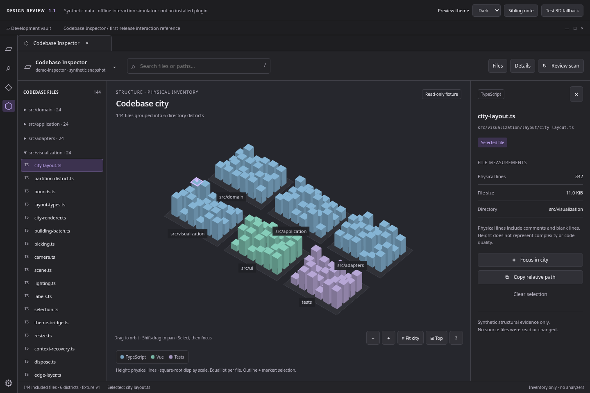
A file, its list entry, and exact measurements stay synchronized.
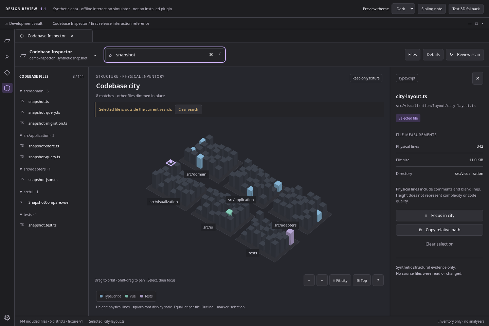
A selected nonmatch stays inspectable while other lots dim in place.
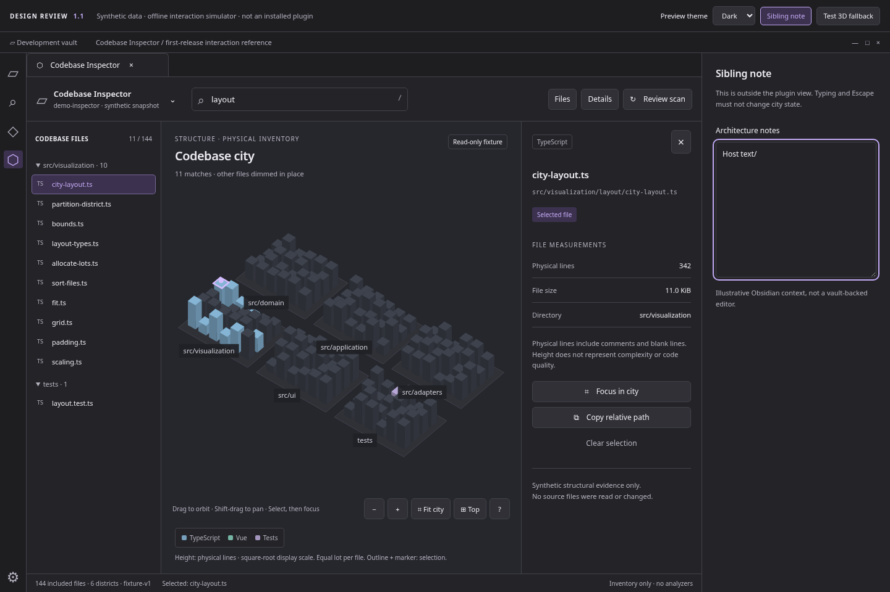
Keyboard input in the sibling note leaves plugin state untouched.
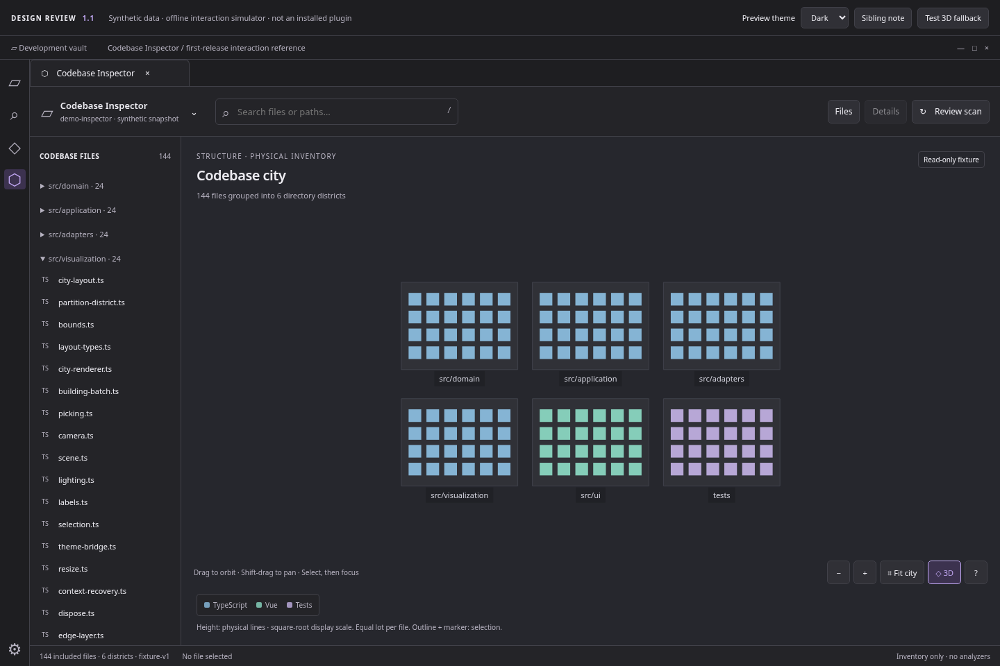
Explore top view, then return to the saved three-dimensional pose.
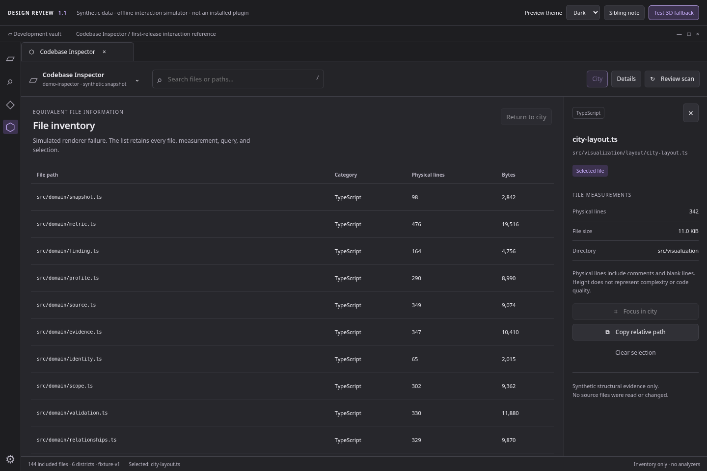
A simulated rendering failure retains the entire HTML file inventory.
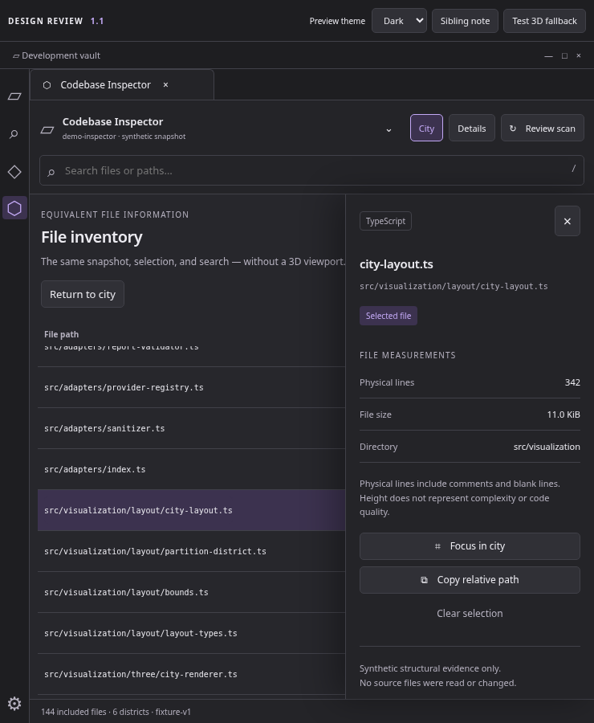
Close the nonmodal drawer without clearing the selected file.
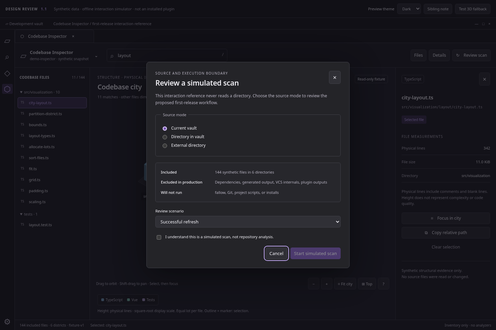
This review modal simulates scope approval; it never reads a path.
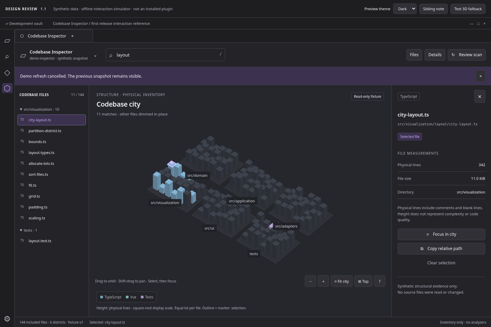
Late simulated results cannot replace the last valid snapshot.
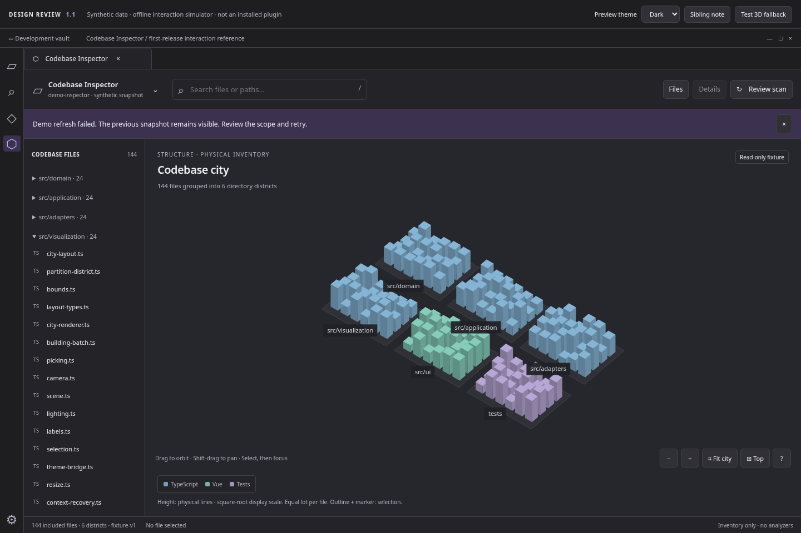
Failed refresh is not an empty or healthy codebase.
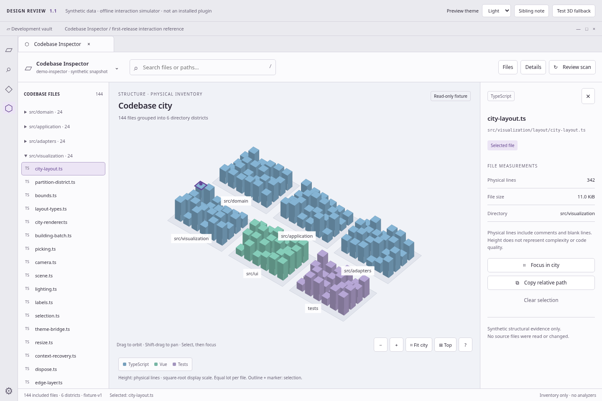
The review-only theme control demonstrates unchanged interaction state.
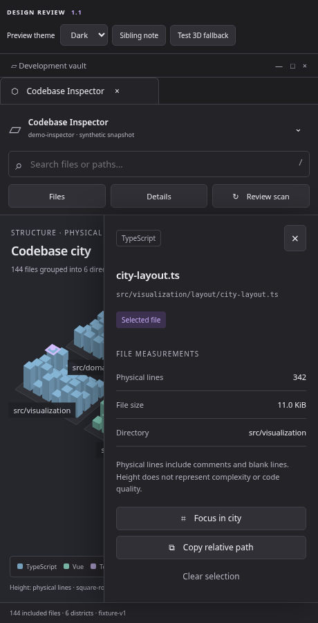
Narrow leaves retain a visible close action and a return path.
{kind=link}
{kind=link}
{kind=link}
{kind=link}
{kind=link}
{kind=link}
{kind=link}
{kind=link}
{kind=link}
{kind=link}
{kind=link}